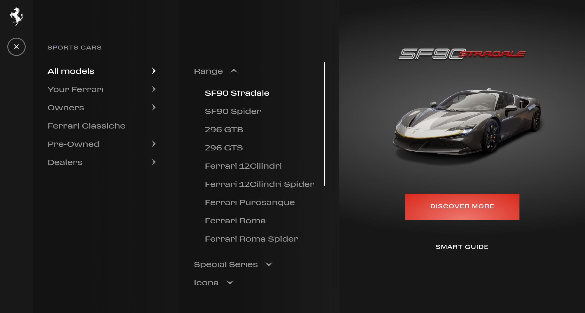
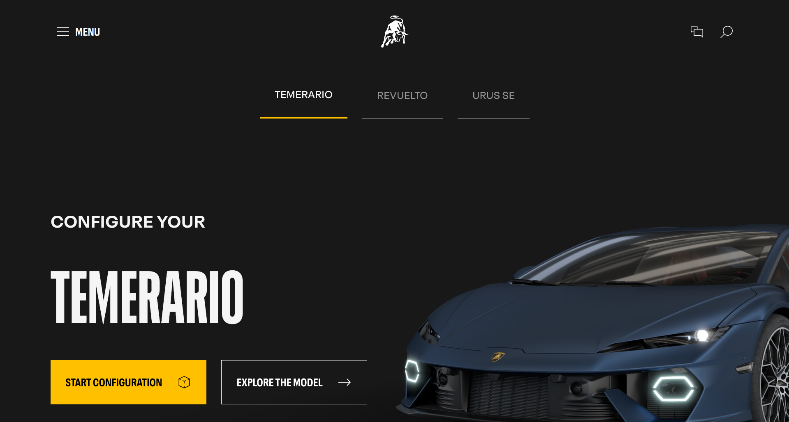
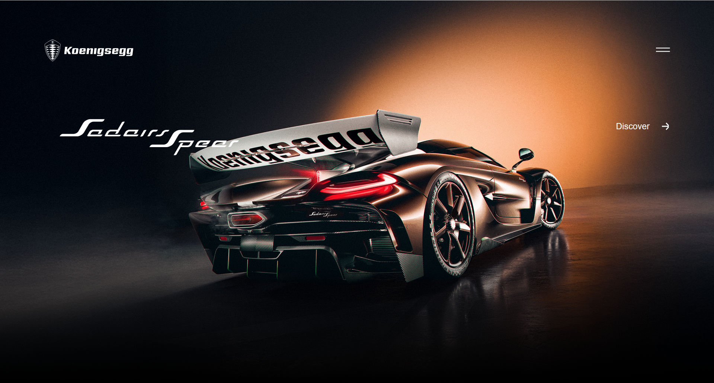
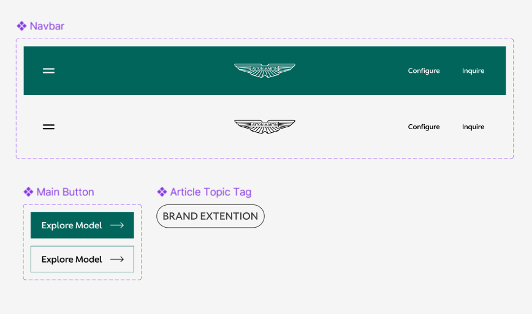
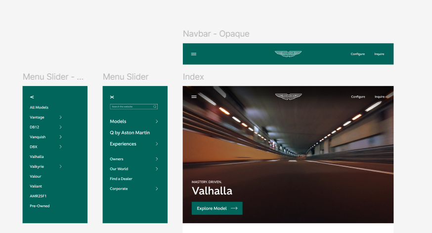

Even a small "for fun" project deserves good research. So, before diving into Figma, I studied Aston Martin's competitors and honed in on design choices that would benefit the website.
I found some similarities across all brands. Design elements were flat with sharp edges, nav bars were minimalistic, and products were emphasised with 3D models.
After studying similar websites, I was able to solidfy goals for the redesign:
Update and standardize buttons
Design simple nav bar that can transition between transparent and solid
Create an interactive carousel that allows users to browse a virtual showroom with 3D models
Reorganize and refine existing elements to allow for more space and a premium aesthetic
With these goals in mind, I started to work in Figma to create components as a sort of mini design system.





Design Process
I started the redesign by making some basic building blocks like buttons, a nav bar, and other small elements.
I then rebuilt the different sections of Aston Martin's landing page, using my new elements wherever necessary. While doing so, I focused on adding more breathability to the site as well as keep each section as meaningful to the brand image as possible.
One important element of Aston Martin's brand that wasn't included in their website was their involvment in racing. I made special emphasis of this with a new section dedicated to their F1 racecar.
Another large area for improvement was the news section. I combined the Stories and News sections into one and gave it a "hero" story as well as tags to give users a better idea of article topics.
Final Product + Takeaways
While not a full scale project that encapsulates the entire UX workflow, small exercises like this have proven to be helpful to me.
I find that focusing on small areas of the UX design and research processes help me work more efficiently in large scale projects. It's kind of like practicing the fundamentals of a sport so that you can move more fluidly in a game.
It was great to see and more importantly feel the difference between the original website and my redesign. Aston Martin is a brand with a rich history, but absolutely benefits from a push into the modern age.